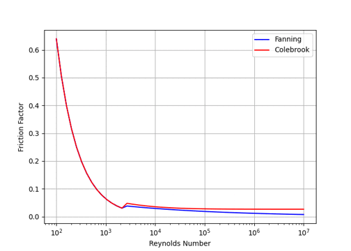
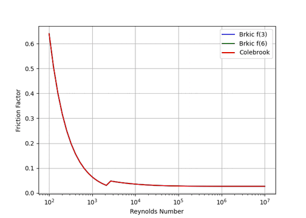
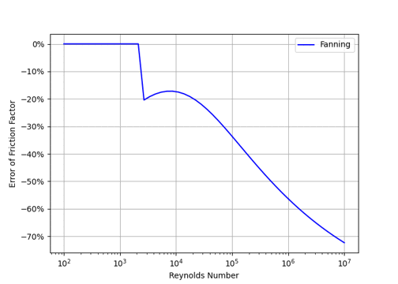
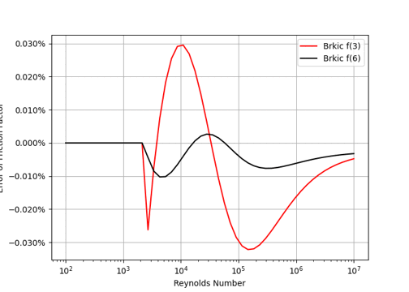
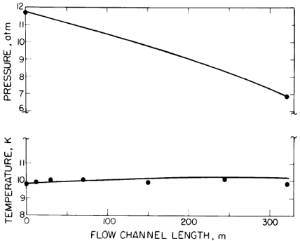
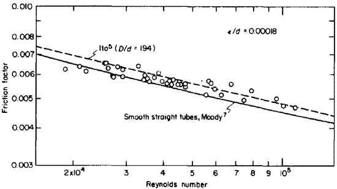
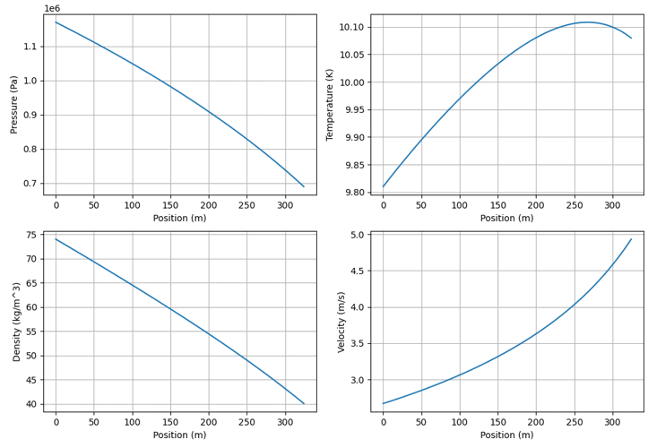

| 密度 | PropsSI('D','T',t0,'P',p0,fluid) | Density |
| 粘性係数 | PropsSI('V','T',t0,'P',p0,fluid) | Viscosity |
| \(\left(\frac{d\rho}{dP}\right)_T\) | PropsSI('d(D)/d(P)|T','T',t0,'P',p0,fluid) | Compressibility |
| \(\left(\frac{d\rho}{dT}\right)_P\) | PropsSI('d(D)/d(T)|P','T',t0,'P',p0,fluid) | Expansivity |
| Cp | PropsSI('C','T',t0,'D',r0,fluid) | Isobaric heat capacity |
| \({-\frac{1}{C_p}\left(\frac{dH}{dP}\right)}_T\) | PropsSI('d(H)/d(P)|T','T',t0,'P',p0,fluid) | Isenthalpic expansion |
| Dean Figure | Dean measurement | This Analysis | Error (%) |
| Fig.3 | 0.98 | 1.01 | 3.22 |
| Fig.4 | 3.00 | 3.09 | 3.05 |
| Fig.5 | 3.35 | 3.58 | 0.73 |



| ρ | 密度 | kg/m3 | Density |
| v | 速度 | m/s | Fluid velocity |
| P | 圧力 | Pa | Pressure |
| τw | せん断応力 | Pa | Wall shear stress |
| D | 等価内直径 | m | Hydraulic diameter of a duct |
| x | 座標 | m | Coordination x direction |
| h | エンタルピー | J/kg | Enthalpy |
| f | ファニング管摩擦係数 | - | Fanning friction factor |
| fD | ダルジー管摩擦係数 | - | Darcy friction factor |
| K | 等温圧縮率 | 1/Pa | Isothermal compressibility |
| β | 体膨張係数 | 1/K | Volume expansion |
| m | 質量流量 | kg/s | Math flow rate |
| G | 質量流速 | kg/(m2s) | Mass flux |
| q | 入熱 | W/m2 | Heat flux |
| Ψ | ジュール-トンプソン効果 | K/Pa | Joule-Thompson coefficient |
| Re | レイノルズ数 | - | Reynolds number |
| ε | 管の粗さ | m | Roughness of inner pipe surface |
| μ | 粘性係数 | Pa·s | Dynamic viscosity |
# Flow1Dstd.py :Steady flow for one-dimensional pipe
# V. Arp, Forced flow, single-phase helium cooling system, Advances in
# Cryogenic Engineering 17 (1972) 342-351
# J. M. Dean, Temperature profiles in a long gaseous-helium-cooled tube,
# Advances in Cryogenic Engineering 23 (1978)250-254
# fluid propaties by coolprop
# 2023-6-27 K. Yoshida
#
from matplotlib import pyplot as plt
from numpy import zeros, linspace, pi, log
from CoolProp.CoolProp import PropsSI
fd_out=0 # file descriptor of list output
def main():
global fd_out
fd_out=open('flow1dstd-out.txt','w') # save data file
fdcsv=open('flow1dstd-out.csv','w') # save csv file
# Verify test results by Dean Fig.5
pin = 1170000. # inlet pressure (Pa)
tin = 9.81 # inlet temperature (K)
diam = 0.0048 # Diameter of pipe (m)
roug = 5.0e-6 # roughness (m) 1.5e-5
mdot = 3.576e-3 # Mass flow (kg/s) 3.121e-3
heat = 5.968 # external heating (W/m)
leng = 321.1 # Total Length (m)
step = 100 # number of steps
fluid = "Helium" # fluid Helium Nitogen, Water
outputs("Flow 1D steady condition: Flow1Dstd.py")
while True:
# input
diam=inpfunc("Diameter of pipe (m),Stop<0",diam)
if diam<0.0:
break
leng=inpfunc("Length of pipe (m)",leng)
pin=inpfunc("Inlet pressure (Pa)",pin)
tin=inpfunc("Inlet temperature (K)",tin)
mdot=inpfunc("Mass flow (kg/s)",mdot)
heat=inpfunc("External Heat (W/m)",heat)
step=inpfunc("Division of length",step)
fluid=inpfunc("Fluid",fluid)
outputs("Input data")
outputs("Inlet pressure: {:4f}, Inlet temperature: {:4f} ".format(pin,tin))
outputs("Mass flow: {:4f}, External Heat: {:4f} ".format(mdot,heat))
outputs("Division of length {:d}, Fluid: {:s} ".format(step,fluid))
outputs("Results")
# formula
dx = leng/step # distance between points (m)
qht = heat
da = diam
ar = pi*da**2/4 # Area circular channel (m^2)
gm = mdot/ar # Flow density (kg/s/m^2)
stp=step+1
pos = linspace(0, step*dx, stp)
p = zeros(stp) # Pressure (Pa)
t = zeros(stp) # Temperature (K)
r = zeros(stp) # Density (kg/m^3)
v = zeros(stp) # Velocity (m/s)
mu = zeros(stp) # Viscosity (Pa*s)
# Initial condition
fri,re = stdinit(p,t,r,v,mu,pin,tin,gm,da,roug,fluid)
outputs("Inlet, Fric: {:4f}, Rey: {:4f} ".format(fri,re))
# Steady state calculation
fri,re, i = stdana(p,t,r,v,mu,dx,gm,qht,da,roug,fri,fluid,stp)
outputs("Outlet, Fric: {:4f}, Rey: {:4f} ".format(fri,re))
outputs("Tin= {:4f}, Tout= {:4f}, i= {:d}".format(t[0],t[i],i))
outputs("Pin= {:4e}, Pout= {:4e}, dP= {:4e}".format(p[0],p[i],(p[0]-p[i])))
outputs("Rin= {:4f}, Rout= {:4f} ".format(r[0],r[i]))
outputs("Vin= {:4f}, Vout= {:4f} ".format(v[0],v[i]))
outputs("mdot-in= {:4f}, mdot-out= {:4f} "
.format(r[0]*v[0]*ar,r[i]*v[i]*ar))
# save data
fdcsv.write("#Flow 1D sateady output\n")
fdcsv.write("x, p, t, v\n")
for i in range(0, stp):
list=[str(pos[i]), str(p[i]), str(t[i]), str(v[i]),"\n"]
fdcsv.write(" ,".join(list))
#plot
plot(pos,p,t,r,v)
# exit loop
print("End of Flow1Dstd.py (~?~)")
fd_out.close()
fdcsv.close()
# -- end --
# inlet condition
def stdinit(p,t,r,v,mu,pin,tin,gm,da,roug,fluid):
p[0] = pin # Pressure (Pa)
t[0] = tin # Temperature (K)
r[0] = PropsSI('D', 'T', t[0], 'P', p[0], fluid) # Density (kg/m3)
v[0] = gm/r[0] # velocity (m/s)
mu[0] = PropsSI('V', 'T', t[0], 'P', p[0], fluid)
# Friction
re = r[0]*v[0]/mu[0]*da # Reinold number
fri = fribrk(re, da, roug)
return fri,re
# analysis along length
def stdana(p,t,r,v,mu, dx,gm,qht,da,roug,fri,fluid,stp):
for i in range(1, stp):
r0 = r[i-1]; t0 = t[i-1]; p0 = p[i-1]; v0 = v[i-1]
kk = PropsSI('d(D)/d(P)|T', 'T', t0, 'P', p0, fluid)/r0
bb = -PropsSI('d(D)/d(T)|P', 'T', t0, 'P', p0, fluid)/r0
cp = PropsSI('C', 'T', t0, 'D', r0, fluid)
jt = -PropsSI('d(H)/d(P)|T', 'T', t0, 'P', p0, fluid)
d1 = (jt + v0**2*kk)/(cp - v0**2*bb)
e1 = 1.0 - gm**2/r0*(kk + bb*d1)
dp = (-gm**2*fri/(2*r0*da) + 4*qht*gm*bb/(r0*da*(cp - v0**2*bb)))/e1
dt = (-gm**2*fri*d1/(2*r0*da) + 4*qht/(gm*da*(cp - v0**2*bb)))/e1
p[i] = p0 + dp*dx
t[i] = t0 + dt*dx
if p[i] < 10: # only subsonic
# Flow has gone sonic
print('Rarefied gas reached')
exit()
r[i] = PropsSI('D', 'T', t[i], 'P', p[i], fluid)
v[i] = gm/r[i]
mu[i] = PropsSI('V', 'T', t[i], 'P', p[i], fluid)
re = r[i]*v[i]/mu[i]*da
fri = fribrk(re, da, roug)
return fri, re, i
def fribrk(r, d, e): # Darcy Friction Factor by Brkic Equation formula(6)
if r > 2500:
a = r*e/d/8.0878
b = log(r/2.18)
c = log(a + b)
g = 0.8686*(b + 1.0119*c/(a + b) - c + (c - 2.3849)/(a + b)**2)
return 1/g**2
else:
return 64/r
def plot(pos,p,t,r,v):
# plot
fig = plt.figure(figsize=(12, 8))
ax1 = fig.add_subplot(2, 2, 1)
ax2 = fig.add_subplot(2, 2, 2)
ax3 = fig.add_subplot(2, 2, 3)
ax4 = fig.add_subplot(2, 2, 4)
ax1.plot(pos, p)
ax1.set_ylabel('Pressure (Pa)')
ax1.set_xlabel('Position (m)')
ax1.grid()
ax2.plot(pos, t)
ax2.set_ylabel('Temperature (K)')
ax2.set_xlabel('Position (m)')
ax2.grid()
ax3.plot(pos, r)
ax3.set_ylabel('Density (kg/m^3)')
ax3.set_xlabel('Position (m)')
ax3.grid()
ax4.plot(pos, v)
ax4.set_ylabel('Velocity (m/s)')
ax4.set_xlabel('Position (m)')
ax4.grid()
plt.show()
# General Functions
# outputs(): print CRT and file
def outputs(sti):
print(sti)
print(sti, file=fd_out)
# keyboard input
def inpfunc(msg,x):
s=input(msg+" : "+str(x)+" : ")
if s=='':
y=x
else:
y=float(s)
return y
if __name__ == "__main__":
main()